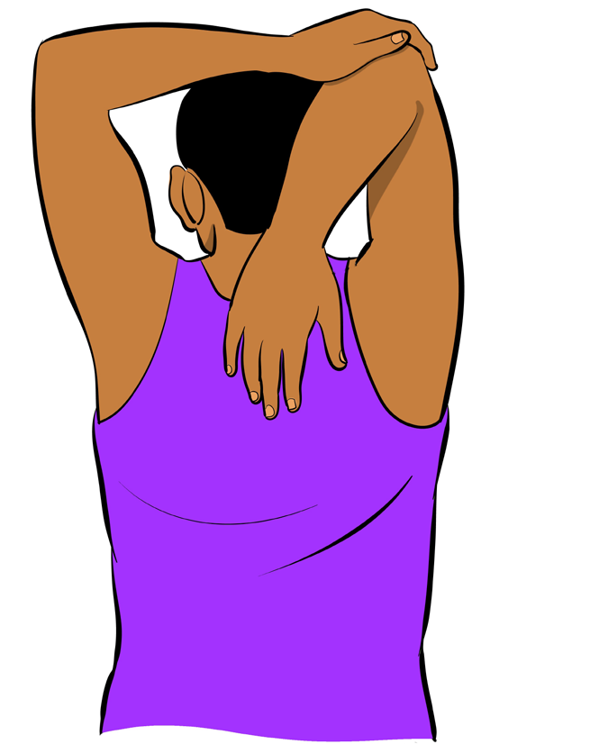

1. Hand reaches the middle of the upper back.
2. Grasp the elbow with the other hand.
3. Gently pull down on elbow with the other hand.
4. Hold the stretch for 15-30 seconds, then repeat the exercise by changing hands.
Figure 3.1: Arm and elbow stretching
Cooling down
The cooling down is also known as the recovery period. It usually consists of exercises at a slower pace and reduced intensity. Cooling down aims to:
(a) Gradually lower the heart rate and breathing;
(b) Avoid fainting or dizziness;
(c) Remove lactic acid from your muscles; and
(d) Return muscles, tendons and ligaments to their normal condition.
Every cooling down consists of:
(a) Low intensity exercise;
(b) Breathing exercises; and
(c) Stretching exercise.